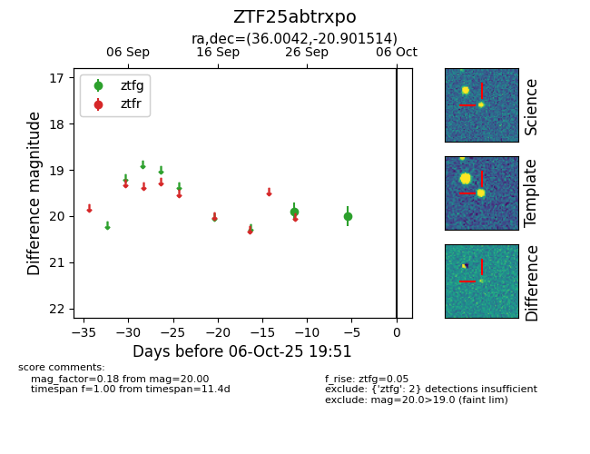

FINK: ZTF25abtrxpo
Lasair: ZTF25abtrxpo
ALeRCE: ZTF25abtrxpo
ZTF25abtrxpo (ztf,fink)
equatorial (ra, dec) = (36.0042,-20.90151)
galactic (l, b) = (201.5110,-67.99991)

last ztfg=20.00
2 ztfg detections